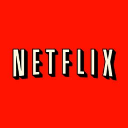

Como uno de los sitios web para aficionados al anime legales que existen Crunchyroll te brinda la oportunidad de disfrutar el mejor contenido anime, obtener las ultimas noticias relacionadas con el mundo del anime o sumergirte en la aventura jugando en tu dispositivo móvil alguno de los títulos disponibles en la plataforma, ya sea, mediante acceso free o premium. Si eliges el acceso premium, por una tarifa mensual de $6,95 podrás tener acceso a todos los capítulos de tus series favoritas y reproducirlos en excelente calidad de audio y vídeo.
Naruto (ナルト?), romanizada como NARUTO, es una serie de manga escrita e ilustrada por Masashi Kishimoto. La obra narra la historia de un ninja adolescente llamado Naruto Uzumaki, quien aspira a convertirse en Hokage, líder de su aldea, con el propósito de ser reconocido como alguien importante dentro de la aldea y entre sus compañeros.
Considerado como el gigante del streaming en la actualidad, Netflix cuenta en su catálogo con una gran variedad de contenido anime para disfrutar en el que, además, la plataforma se encuentra activamente en la adquisición de los derechos de algunas series populares que se encuentran emitiéndose actualmente.
